module load kallisto/0.46.1
kallisto quant -i /databank/igenomes/Homo_sapiens/Ensembl/GRCh38/Sequence/Kallisto/cdna-release-85.idx -o ./A2_11_A1 -b 100 -t 4 \
/project/thelior_project/vchong/novogene_exp4_A2-11_A2-12/fastp/A2_11_A1.R1.fq.gz \
/project/thelior_project/vchong/novogene_exp4_A2-11_A2-12/fastp/A2_11_A1.R2.fq.gz1. Differential expression
V Chong | vanessa.chong@rdm.ox.ac.uk | 29 October 2025
Preamble
- Bulk RNAseq samples from healthy, patient-derived organoids of the terminal ileum (TI).
- Libraries were prepared and sequenced in several batches.
- Organoids were stimulated with IL22 only, both IL22 and IL26, or IL26 only. Controls were unstimulated.
- Stimulation was performed for 24, 48, or 72 hours.
Points-of-note
- 24 hours samples are spread across three batches, and two different (previous and current) growth mediums. technical replicates in progress
- 48 hours samples constitute a batch of its own, performed in current growth medium only. technical replicates in progress
- 72 hours samples are not replicated and performed in a previous growth medium only.
These are all reflected in the sample metadata called into the analysis later.
Analysis
Consider the impact of experimental covariates e.g. donor, batch, medium. Statistically test for genes that are affected by (any) IL treatment while controlling for differences due to these covariates. More detailed pairwise comparison to follow.
Pseudoalignment and estimation of transcript abundances
Kallisto with bootstraps (-b 100) enabled for downstream sleuth differential expression.
Differential expression analysis
Reference - “Differential analysis using p-value aggregation, on multiple conditions and covariates”
Initialise R environment
##### Set libPaths #####
.libPaths(c("/home/chongmorrison/R/x86_64-pc-linux-gnu-library/4.5",
"/home/chongmorrison/R/4.5.0-Bioc3.21"))
.libPaths() # check .libPaths[1] "/home/chongmorrison/R/x86_64-pc-linux-gnu-library/4.5"
[2] "/home/chongmorrison/R/4.5.0-Bioc3.21"
[3] "/usr/local/lib/R/site-library"
[4] "/usr/lib/R/site-library"
[5] "/usr/lib/R/library" ##### Memory/parallel cores usage #####
options(Ncpus = 12) # adjust no. of cores for base R
getOption("Ncpus", 1L)[1] 12##### Import all required packages #####
# data-wrangling and plots
library(tidyverse)
#library(RColorBrewer)
#library(viridis)
#library(ggpubr)
library(SummarizedExperiment)
library(dittoSeq)
# analysis
library(biomaRt)
library(PCAtools)
library(sleuth)
library(rbioapi)
# to cite packages
library(grateful)
##### Set seed for reproducibility of random sampling #####
set.seed(584)Ensembl annotations - release 80
Kallisto index on CCB was built on Ensembl release 85 (Sept 2016). Unfortunately the only currently-available archived versions of Ensembl from around this time are release 80 (May 2015) and release 100 (Apr 2020)
Using release 80 annotations as it is the “closest” available and should not differ significantly to release 85.
# run once and save locally for later use
ensembl <- biomaRt::useEnsembl(biomart = "genes", dataset = "hsapiens_gene_ensembl", version = 80)
annotations <- biomaRt::getBM(mart = ensembl, attributes=c("ensembl_transcript_id", "transcript_version", "external_gene_name", "ensembl_gene_id"))
annotations$ensembl_transcript_id_version <- paste(annotations$ensembl_transcript_id, annotations$transcript_version, sep=".")
## transcript-to-gene mapping
ttg <- dplyr::rename(annotations, target_id = ensembl_transcript_id_version, ens_gene = ensembl_gene_id, ext_gene = external_gene_name)
ttg <- dplyr::select(ttg, c('target_id', 'ens_gene', 'ext_gene'))
saveRDS(ttg, file = "./ttg85.rds")ttg <- readRDS("./ttg85.rds")Load sample metadata
metadata <- read.table(file = './metadata_29.10.25.csv', sep = ',', header=TRUE)
head(metadata) sample donor stim time batch medium
1 Ctrl_24 TIP-OX-924 ctl 24h one x
2 Ctrl_72 TIP-OX-924 ctl 72h one x
3 IL22_24 TIP-OX-924 IL22 24h one x
4 IL22_26_24 TIP-OX-924 IL22+IL26 24h one x
5 IL22_26_72 TIP-OX-924 IL22+IL26 72h one x
6 IL22_72 TIP-OX-924 IL22 72h one x
path
1 /home/chongmorrison/Dropbox/VCM-StarBook/ResearchProjects/theliorbio/analyses/rnaseq/kallisto_v0.46.1/Ctrl_24/abundance.h5
2 /home/chongmorrison/Dropbox/VCM-StarBook/ResearchProjects/theliorbio/analyses/rnaseq/kallisto_v0.46.1/Ctrl_72/abundance.h5
3 /home/chongmorrison/Dropbox/VCM-StarBook/ResearchProjects/theliorbio/analyses/rnaseq/kallisto_v0.46.1/IL22_24/abundance.h5
4 /home/chongmorrison/Dropbox/VCM-StarBook/ResearchProjects/theliorbio/analyses/rnaseq/kallisto_v0.46.1/IL22_26_24/abundance.h5
5 /home/chongmorrison/Dropbox/VCM-StarBook/ResearchProjects/theliorbio/analyses/rnaseq/kallisto_v0.46.1/IL22_26_72/abundance.h5
6 /home/chongmorrison/Dropbox/VCM-StarBook/ResearchProjects/theliorbio/analyses/rnaseq/kallisto_v0.46.1/IL22_72/abundance.h5Explore experimental covariates vs conditions
Build sleuth object from metadata and kallisto abundances.
target_mapping = transcript groupings into genes, where aggregation_column is the column in target_mapping used to aggregate the transcripts. When both target_mapping and aggregation_column are provided, sleuth will automatically run in gene mode, returning gene differential expression results that came from the aggregation of transcript p-values.
so <- sleuth_prep(metadata,
target_mapping = ttg, aggregation_column = "ens_gene",
extra_bootstrap_summary = TRUE)Warning in check_num_cores(num_cores): It appears that you are running Sleuth from within Rstudio.
Because of concerns with forking processes from a GUI, 'num_cores' is being set to 1.
If you wish to take advantage of multiple cores, please consider running sleuth from the command line.reading in kallisto resultsdropping unused factor levels....................................
normalizing est_counts
65701 targets passed the filter
normalizing tpm
merging in metadata
summarizing bootstraps
....................................# covariates
plot_pca(so, units = "tpm", color_by = "donor")Warning: `aes_string()` was deprecated in ggplot2 3.0.0.
ℹ Please use tidy evaluation idioms with `aes()`.
ℹ See also `vignette("ggplot2-in-packages")` for more information.
ℹ The deprecated feature was likely used in the sleuth package.
Please report the issue at <https://github.com/pachterlab/sleuth/issues>.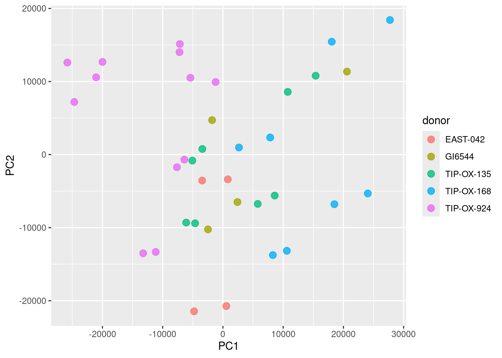
plot_pca(so, units = "tpm", color_by = "batch")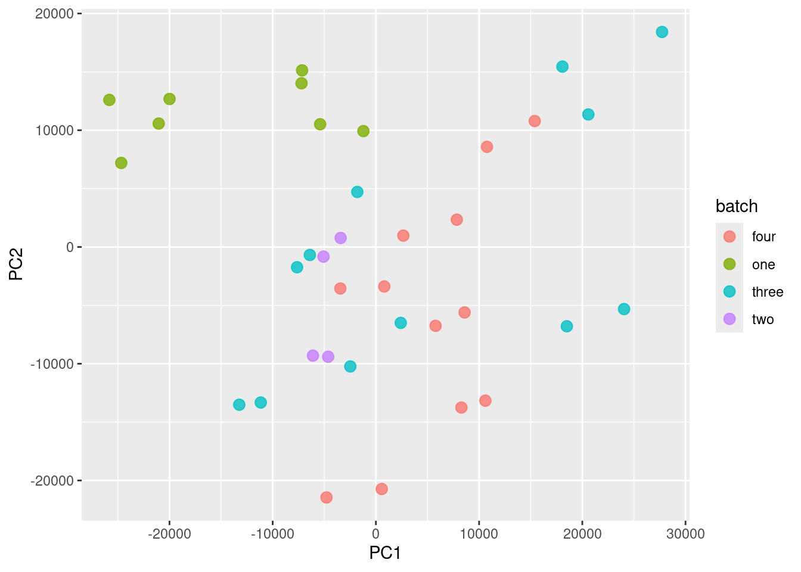
plot_pca(so, units = "tpm", color_by = "medium")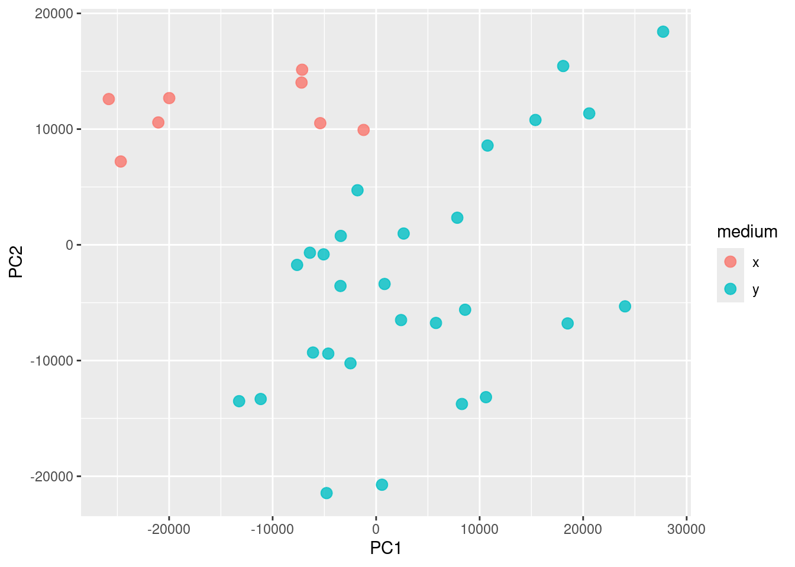
# conditions
plot_pca(so, units = "tpm", color_by = "time")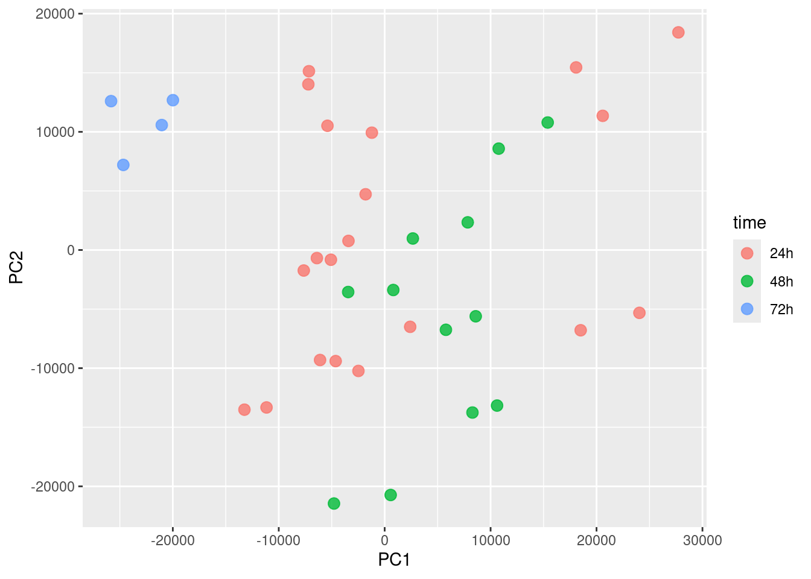
plot_pca(so, units = "tpm", color_by = "stim")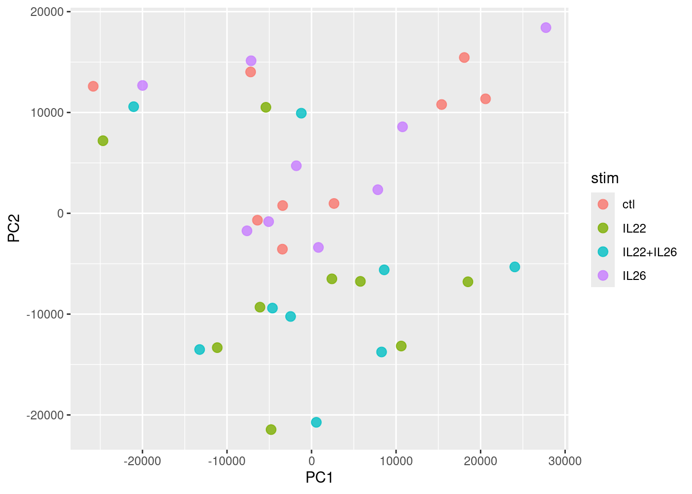
- 72h samples should be excluded from the other samples.
metadata <- subset(metadata, !time == "72h")so <- sleuth_prep(metadata,
target_mapping = ttg, aggregation_column = "ens_gene",
extra_bootstrap_summary = TRUE,
num_cores = 4)# save sleuth object to reload without recomputing bootstraps
saveRDS(so, file = "./01_diffexp_sleuth-so.rds")so <- readRDS("./01_diffexp_sleuth-so.rds")# covariates
plot_pca(so, units = "tpm", color_by = "donor")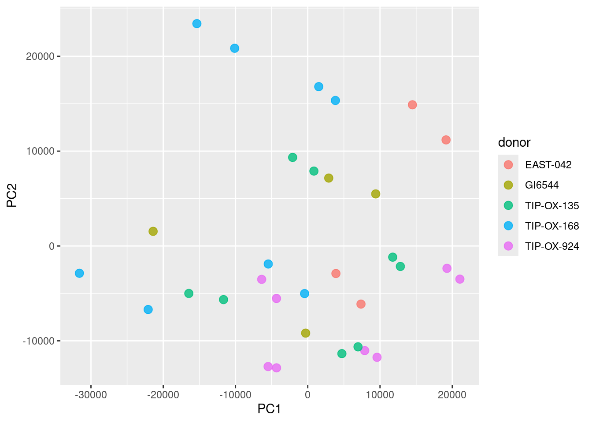
plot_pca(so, units = "tpm", color_by = "batch")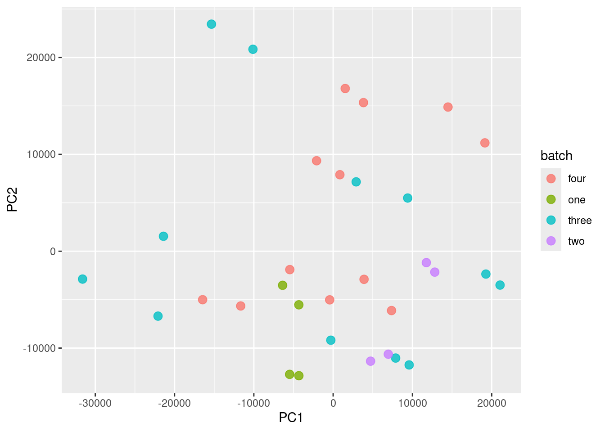
plot_pca(so, units = "tpm", color_by = "medium")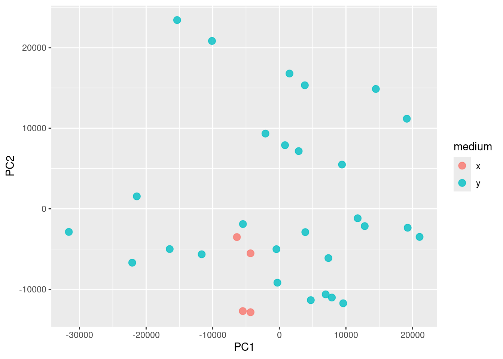
# conditions
plot_pca(so, units = "tpm", color_by = "time")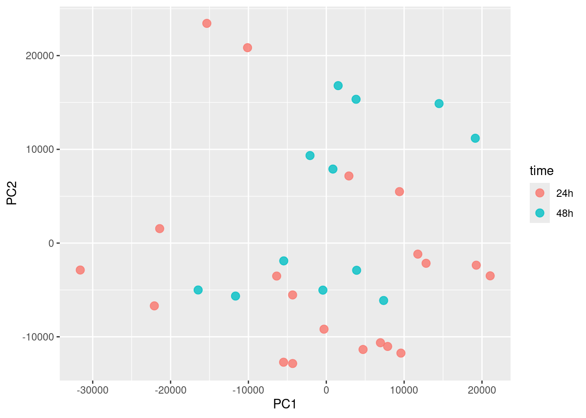
plot_pca(so, units = "tpm", color_by = "stim")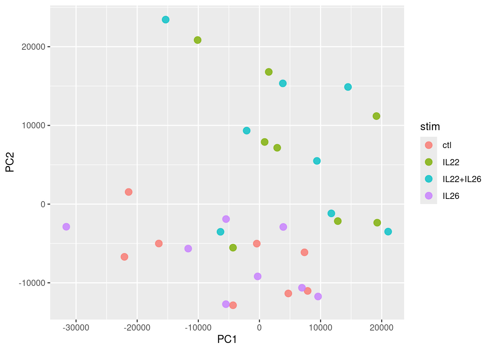
Test for differentially-expressed genes - multi-condition
Fit a reduced model, which includes the parameters corresponding to experimental covariates we are controlling for i.e. batch (which will account for medium, time) and donor. At this point time is accounted for i.e. to control for genes that may be differentially expressed at different timepoints independently of stim.
so <- sleuth_fit(so, ~batch + donor, 'reduced')fitting measurement error modelsshrinkage estimation1 NA values were found during variance shrinkage estimation due to mean observation values outside of the range used for the LOESS fit.
The LOESS fit will be repeated using exact computation of the fitted surface to extrapolate the missing values.
These are the target ids with NA values: ENST00000219022.2computing variance of betasFit the full model which includes all parameters including stim.
so <- sleuth_fit(so, ~batch + donor + stim, 'full')fitting measurement error modelsshrinkage estimation3 NA values were found during variance shrinkage estimation due to mean observation values outside of the range used for the LOESS fit.
The LOESS fit will be repeated using exact computation of the fitted surface to extrapolate the missing values.
These are the target ids with NA values: ENST00000219022.2, ENST00000356495.4, ENST00000361624.2computing variance of betasThen compare the full model to the reduced model with the likelihood ratio test. Using the likelihood ratio test, sleuth identifies genes whose abundances are significantly better explained when IL treatment (stim) is taken into account, while accounting for baseline differences that may be explained by batch or donor.
so <- sleuth_lrt(so, 'reduced', 'full')Obtain gene-level differential expression results. Sleuth uses the p-values from comparing transcripts to make a gene-level determination and perform gene differential expression.
sleuth_table_gene <- sleuth_results(so, 'reduced:full', 'lrt', show_all = FALSE)
sleuth_table_gene <- dplyr::filter(sleuth_table_gene, qval <= 0.01)
head(sleuth_table_gene, 20) target_id ext_gene num_aggregated_transcripts sum_mean_obs_counts
1 ENSG00000115386 REG1A 4 13.747139
2 ENSG00000197249 SERPINA1 5 17.529003
3 ENSG00000176153 GPX2 5 31.790580
4 ENSG00000140279 DUOX2 3 12.233783
5 ENSG00000179403 VWA1 4 18.011017
6 ENSG00000140274 DUOXA2 2 12.252341
7 ENSG00000165188 RNF183 4 14.096104
8 ENSG00000115474 KCNJ13 3 18.130287
9 ENSG00000253368 TRNP1 2 13.655944
10 ENSG00000079385 CEACAM1 4 17.818769
11 ENSG00000272398 CD24 5 22.221984
12 ENSG00000163734 CXCL3 3 11.822161
13 ENSG00000128268 MGAT3 3 15.139323
14 ENSG00000185499 MUC1 3 11.365316
15 ENSG00000205403 CFI 2 5.898606
16 ENSG00000187908 DMBT1 1 9.620689
17 ENSG00000176532 PRR15 2 14.328065
18 ENSG00000095932 SMIM24 3 18.655423
19 ENSG00000134827 TCN1 2 13.827779
20 ENSG00000171236 LRG1 2 10.986103
pval qval
1 2.128312e-69 2.620165e-65
2 1.651303e-45 1.016460e-41
3 3.608119e-44 1.480652e-40
4 5.263609e-38 1.620007e-34
5 8.142610e-37 2.004873e-33
6 1.812038e-36 3.718000e-33
7 1.084673e-35 1.907630e-32
8 1.823392e-29 2.805972e-26
9 3.505081e-28 4.794561e-25
10 3.145516e-25 3.872445e-22
11 6.291171e-25 7.040964e-22
12 8.496262e-25 8.716456e-22
13 4.908217e-24 4.229417e-21
14 4.752487e-24 4.229417e-21
15 5.153217e-24 4.229417e-21
16 1.460252e-23 1.123573e-20
17 1.955211e-23 1.415918e-20
18 4.173783e-23 2.854635e-20
19 5.559889e-23 3.602515e-20
20 2.592034e-22 1.595526e-19# save result table
write.csv(sleuth_table_gene, file = "./outputs/01_diffexp_sleuth-genes-qval001-stim.csv", quote = FALSE, row.names = FALSE)Obtain transcript-level differential expression results.
sleuth_table_tx <- sleuth_results(so, 'reduced:full', 'lrt', show_all = FALSE, pval_aggregate = FALSE)
sleuth_table_tx <- dplyr::filter(sleuth_table_tx, qval <= 0.01)
head(sleuth_table_tx, 20) target_id ens_gene ext_gene pval qval
1 ENST00000244565.7 <NA> <NA> 2.035618e-24 6.534266e-20
2 ENST00000330163.8 <NA> <NA> 3.057968e-24 6.534266e-20
3 ENST00000368956.6 <NA> <NA> 3.057968e-24 6.534266e-20
4 ENST00000344338.7 <NA> <NA> 6.530283e-24 7.310165e-20
5 ENST00000368955.7 <NA> <NA> 6.530283e-24 7.310165e-20
6 ENST00000479258.5 <NA> <NA> 6.842161e-24 7.310165e-20
7 ENST00000488524.1 ENSG00000115386 REG1A 1.000734e-23 9.164437e-20
8 ENST00000619379.1 ENSG00000187908 DMBT1 1.460252e-23 9.360802e-20
9 ENST00000338354.7 <NA> <NA> 1.460252e-23 9.360802e-20
10 ENST00000368909.7 <NA> <NA> 1.460252e-23 9.360802e-20
11 ENST00000296695.9 <NA> <NA> 1.589414e-22 9.262528e-19
12 ENST00000321348.8 <NA> <NA> 4.981457e-22 2.459365e-18
13 ENST00000393080.8 <NA> <NA> 4.987480e-22 2.459365e-18
14 ENST00000427888.2 ENSG00000239754 CFB 8.326978e-22 3.139956e-18
15 ENST00000433503.2 ENSG00000241534 CFB 8.326978e-22 3.139956e-18
16 ENST00000436692.2 ENSG00000243570 CFB 8.326978e-22 3.139956e-18
17 ENST00000419411.6 <NA> <NA> 8.326978e-22 3.139956e-18
18 ENST00000039007.4 ENSG00000036473 OTC 1.264826e-21 4.504466e-18
19 ENST00000330871.3 ENSG00000184557 SOCS3 1.683388e-21 5.395596e-18
20 ENST00000454188.5 <NA> <NA> 1.667167e-21 5.395596e-18
test_stat rss degrees_free mean_obs var_obs tech_var
1 113.39923 18.108697 3 7.374335 0.6873078 0.0009263481
2 112.57818 109.874120 3 9.603141 3.8569654 0.0018507640
3 112.57818 109.874120 3 9.603141 3.8569654 0.0018507640
4 111.04733 120.195423 3 10.099726 4.0904996 0.0008850097
5 111.04733 120.195423 3 10.099726 4.0904996 0.0008850097
6 110.95319 426.047794 3 3.329609 14.9232747 0.0085927194
7 110.18594 282.302693 3 2.580435 9.4763270 0.0375243358
8 109.42337 109.503692 3 9.620689 4.0154298 0.0011393785
9 109.42337 109.503692 3 9.620689 4.0154298 0.0011393785
10 109.42337 109.503692 3 9.620689 4.0154298 0.0011393785
11 104.60447 89.273925 3 6.167559 3.3852884 0.0073218897
12 102.29788 17.807119 3 9.696337 0.9522102 0.0003139664
13 102.29544 263.748235 3 6.419978 10.1830174 0.1513374771
14 101.26032 13.505785 3 7.507109 0.7457563 0.0002046838
15 101.26032 13.505785 3 7.507109 0.7457563 0.0002046838
16 101.26032 13.505785 3 7.507109 0.7457563 0.0002046838
17 101.26032 13.505785 3 7.507109 0.7457563 0.0002046838
18 100.41607 9.254886 3 8.157050 0.5746133 0.0003565220
19 99.83867 183.212473 3 5.253434 6.0925675 0.0542978318
20 99.85823 228.748372 3 2.118858 7.7303490 0.0641336692
sigma_sq smooth_sigma_sq final_sigma_sq
1 0.7536027 0.02064112 0.7536027
2 4.5762376 0.01835476 4.5762376
3 4.5762376 0.01835476 4.5762376
4 5.0072576 0.02075054 5.0072576
5 5.0072576 0.02075054 5.0072576
6 17.7433987 0.22252250 17.7433987
7 11.7250879 0.40472948 11.7250879
8 4.5615144 0.01841836 4.5615144
9 4.5615144 0.01841836 4.5615144
10 4.5615144 0.01841836 4.5615144
11 3.7124250 0.03337283 3.7124250
12 0.7416493 0.01870914 0.7416493
13 10.8381723 0.02959264 10.8381723
14 0.5625364 0.01988880 0.5625364
15 0.5625364 0.01988880 0.5625364
16 0.5625364 0.01988880 0.5625364
17 0.5625364 0.01988880 0.5625364
18 0.3852637 0.01747636 0.3852637
19 7.5795552 0.05575429 7.5795552
20 9.4670485 0.58534292 9.4670485# save result table
write.csv(sleuth_table_tx, file = "./outputs/01_diffexp_sleuth-transcripts-qval001-stim.csv", quote = FALSE, row.names = FALSE)Run sleuth_live(so) for quick exploration of the results.
Visualise transcript counts across multiple conditions
dittoSeq requires samples as colnames and targets (i.e. genes or transcripts) as rownames. These can be pulled from the sleuth object and wrangled to the compatible format using tidyverse.
abundances <- data.frame(so[["obs_raw"]])
head(abundances) target_id est_counts eff_len len tpm sample
1 ENST00000000233.9 2056.551 825.3027 1103 63.29273 A2-7-A1
2 ENST00000000233.9 3124.549 827.4371 1103 88.91565 A2-7-A2
3 ENST00000000233.9 3306.509 824.7783 1103 112.52427 A2-7-A3
4 ENST00000000233.9 2727.306 819.5583 1103 93.71084 A2-7-A4
5 ENST00000000233.9 2578.714 804.5703 1103 95.53383 A2-7-B1
6 ENST00000000233.9 2342.839 808.3872 1103 73.72855 A2-7-B2This is to create an abundances table with added gene annotations from ttg so we can see gene names in dittoSeq heatmaps.
abundances.gene <- left_join(abundances, ttg, by = "target_id")
head(abundances.gene) target_id est_counts eff_len len tpm sample ens_gene
1 ENST00000000233.9 2056.551 825.3027 1103 63.29273 A2-7-A1 <NA>
2 ENST00000000233.9 3124.549 827.4371 1103 88.91565 A2-7-A2 <NA>
3 ENST00000000233.9 3306.509 824.7783 1103 112.52427 A2-7-A3 <NA>
4 ENST00000000233.9 2727.306 819.5583 1103 93.71084 A2-7-A4 <NA>
5 ENST00000000233.9 2578.714 804.5703 1103 95.53383 A2-7-B1 <NA>
6 ENST00000000233.9 2342.839 808.3872 1103 73.72855 A2-7-B2 <NA>
ext_gene
1 <NA>
2 <NA>
3 <NA>
4 <NA>
5 <NA>
6 <NA>Chain target_id (ensembl transcript ID with version) with ext_gene (gene symbol).
abundances.gene$target_id.gene <- paste(abundances.gene$target_id, abundances.gene$ext_gene, sep = "_")# transcript-per-million values
tpm <- data.frame(abundances.gene$target_id.gene, abundances.gene$tpm, abundances.gene$sample) %>% setNames(c("target_id", "tpm", "sample"))
tpm <- tpm %>% pivot_wider(names_from=sample, values_from=tpm) %>% data.frame(check.names = FALSE)
rownames(tpm) <- tpm$target_id
tpm <- subset(tpm, select=-c(target_id))
head(tpm[1:5,1:5]) A2-7-A1 A2-7-A2 A2-7-A3 A2-7-A4 A2-7-B1
ENST00000000233.9_NA 63.29273 88.91565 112.52427 93.71084 95.53383
ENST00000000412.7_NA 49.49052 45.63919 52.03826 58.57941 41.99059
ENST00000000442.10_NA 21.20029 22.52228 29.66861 18.40975 44.43467
ENST00000001008.5_FKBP4 31.63688 37.36310 40.44536 44.48072 23.40765
ENST00000001146.6_NA 47.67711 25.44619 44.64982 28.14402 132.59824# log(tpm+1) values
logtpm <- log2(tpm + 1)
head(logtpm[1:5,1:5]) A2-7-A1 A2-7-A2 A2-7-A3 A2-7-A4 A2-7-B1
ENST00000000233.9_NA 6.006584 6.490500 6.826857 6.565458 6.592963
ENST00000000412.7_NA 5.657941 5.543471 5.728961 5.896742 5.425949
ENST00000000442.10_NA 4.472506 4.555956 4.938691 4.278710 5.505722
ENST00000001008.5_FKBP4 5.028431 5.261647 5.373139 5.507183 4.609262
ENST00000001146.6_NA 5.605172 4.724988 5.512537 4.865128 7.061757dittoSeq can also incorporate metadata information. These need to be a dataframe in the same order as colnames of the TPM dataframe.
# not in order of TPM dataframe
metadata.ditto <- data.frame(so[["sample_to_covariates"]])# ordered to match TPM and log(tpm+1) dataframes
metadata.ditto <- metadata.ditto[match(colnames(tpm), metadata.ditto$sample),]
colnames(tpm) [1] "A2-7-A1" "A2-7-A2" "A2-7-A3" "A2-7-A4" "A2-7-B1"
[6] "A2-7-B2" "A2-7-B3" "A2-7-B4" "A2-7-C1" "A2-7-C2"
[11] "A2-7-C3" "A2-7-C4" "A2-7-D1" "A2-7-D2" "A2-7-D3"
[16] "A2-7-D4" "A2_11_A1" "A2_11_A2" "A2_11_A3" "A2_11_A4"
[21] "A2_11_B1" "A2_11_B2" "A2_11_B3" "A2_11_B4" "A2_12_C1"
[26] "A2_12_C2" "A2_12_C3" "A2_12_C4" "Ctrl_24" "IL22_24"
[31] "IL22_26_24" "IL26_24" metadata.ditto$sample [1] "A2-7-A1" "A2-7-A2" "A2-7-A3" "A2-7-A4" "A2-7-B1"
[6] "A2-7-B2" "A2-7-B3" "A2-7-B4" "A2-7-C1" "A2-7-C2"
[11] "A2-7-C3" "A2-7-C4" "A2-7-D1" "A2-7-D2" "A2-7-D3"
[16] "A2-7-D4" "A2_11_A1" "A2_11_A2" "A2_11_A3" "A2_11_A4"
[21] "A2_11_B1" "A2_11_B2" "A2_11_B3" "A2_11_B4" "A2_12_C1"
[26] "A2_12_C2" "A2_12_C3" "A2_12_C4" "Ctrl_24" "IL22_24"
[31] "IL22_26_24" "IL26_24" Import data for dittoSeq which uses SingleCellExperiment structure.
bulkSCE <- importDittoBulk(x = list(counts = tpm, logcounts = logtpm),
metadata = metadata.ditto)Obtain sleuth differentially-expressed transcripts.
tx.diff <- na.omit(sleuth_table_tx)
tx.diff <- paste(tx.diff$target_id, tx.diff$ext_gene, sep = "_")# By default, dittoHeatmap prioritises "logcounts" over "counts"
dittoHeatmap(bulkSCE, tx.diff,
annot.by = c("stim", "time", "medium", "donor"),
order.by = ("stim"), cluster_cols = FALSE,
show_rownames = FALSE,
main = "Differential genes (qval<0.01) | All conditions") 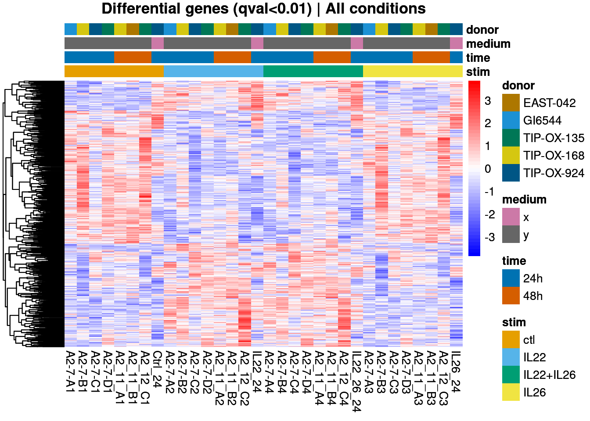
# By default, dittoHeatmap prioritises "logcounts" over "counts"
dittoHeatmap(bulkSCE, tx.diff,
annot.by = c("stim", "time", "batch"),
order.by = ("stim"), cluster_cols = FALSE,
show_rownames = FALSE,
main = "Differential genes (qval<0.01) | All conditions") 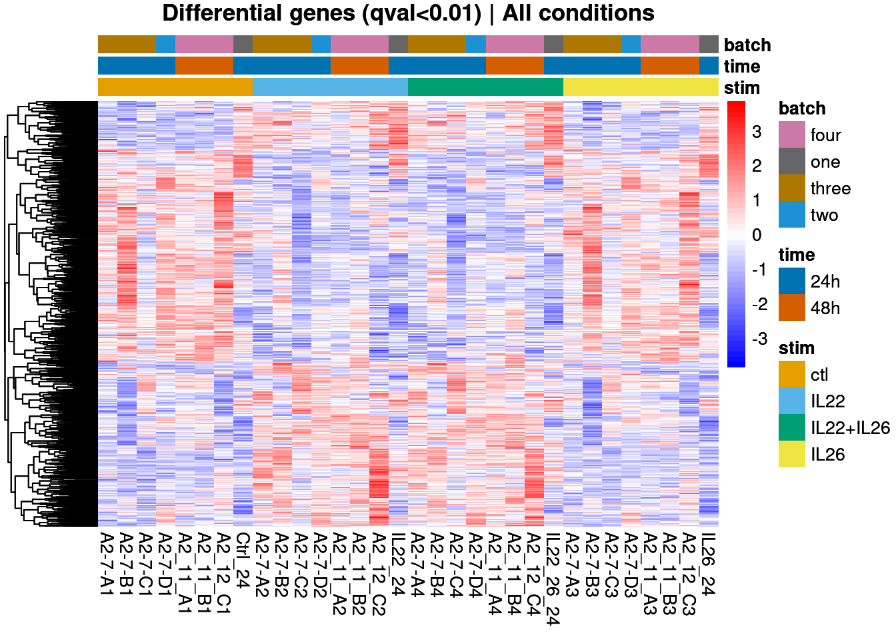
IL22 or IL22+IL26 stimulation has a distinct effect with ~1000 differentially-expressed genes (qval <= 0.01). At this resolution IL26 and control (unstimulated) look fairly similar.
GO analysis - PANTHER classification system
rba_panther_info(what="datasets") # list dataset IDs release_date
1 2025-07-22
2 2025-07-22
3 2025-07-22
4 2024-06-20
5 2024-06-20
6 2024-06-20
7 2024-06-20
8 2024-06-20
9 2023-09-07
description
1 Gene Ontology Molecular Function annotations including both manually curated and electronic annotations.
2 Gene Ontology Biological Process annotations including both manually curated and electronic annotations.
3 Gene Ontology Cellular Component annotations including both manually curated and electronic annotations.
4 A molecular process that can be carried out by the action of a single macromolecular machine, usually via direct physical interactions with other molecular entities. Function in this sense denotes an action, or activity, that a gene product (or a complex) performs.
5 A biological process is the execution of a genetically-encoded biological module or program. It consists of all the steps required to achieve the specific biological objective of the module. A biological process is accomplished by a particular set of molecular functions carried out by specific gene products (or macromolecular complexes), often in a highly regulated manner and in a particular temporal sequence.
6 A location, relative to cellular compartments and structures, occupied by a macromolecular machine. There are three types of cellular components described in the gene ontology: (1) the cellular anatomical entity where a gene product carries out a molecular function (e.g., plasma membrane, cytoskeleton) or membrane-enclosed compartments (e.g., mitochondrion); (2) virion components, where viral proteins act, and (3) the stable macromolecular complexes of which gene product are parts (e.g., the clathrin complex).
7
8 Panther Pathways
9 Reactome Pathways
id label
1 GO:0003674 molecular_function
2 GO:0008150 biological_process
3 GO:0005575 cellular_component
4 ANNOT_TYPE_ID_PANTHER_GO_SLIM_MF PANTHER GO Slim Molecular Function
5 ANNOT_TYPE_ID_PANTHER_GO_SLIM_BP PANTHER GO Slim Biological Process
6 ANNOT_TYPE_ID_PANTHER_GO_SLIM_CC PANTHER GO Slim Cellular Location
7 ANNOT_TYPE_ID_PANTHER_PC protein class
8 ANNOT_TYPE_ID_PANTHER_PATHWAY ANNOT_TYPE_PANTHER_PATHWAY
9 ANNOT_TYPE_ID_REACTOME_PATHWAY ANNOT_TYPE_REACTOME_PATHWAY
version
1 10.5281/zenodo.16423886
2 10.5281/zenodo.16423886
3 10.5281/zenodo.16423886
4 19
5 19
6 19
7 19
8 19
9 86head(rba_panther_info(what="organisms")) # list organism IDs name taxon_id short_name version
1 human 9606 HUMAN Reference Proteome 2023_03
2 mouse 10090 MOUSE Reference Proteome 2023_03
3 rat 10116 RAT Reference Proteome 2023_03
4 chicken 9031 CHICK Reference Proteome 2023_03
5 zebrafish 7955 DANRE Reference Proteome 2023_03
6 fruit_fly 7227 DROME Reference Proteome 2023_03
long_name
1 Homo sapiens
2 Mus musculus
3 Rattus norvegicus
4 Gallus gallus
5 Danio rerio
6 Drosophila melanogasterGet gene list-of-interest i.e. differentially-expressed genes (up- or down-regulated) in response to IL stimulation.
genes.diff <- sleuth_table_gene$ext_genePerform Fisher’s exact test with FDR < 0.01, Reactome Pathways annotation.
go <- rba_panther_enrich(genes = genes.diff,
organism = 9606 , annot_dataset = "ANNOT_TYPE_ID_REACTOME_PATHWAY",
cutoff = 0.01,
test_type = "FISHER",
correction = "FDR")Performing PANTHER over-representation analysis (Fisher's exact test) on 1343 genes from `organism 9606` against `ANNOT_TYPE_ID_REACTOME_PATHWAY` datasets.Plot as diverging barchart.
go.res <- data.frame(go$result)
go.res$GO <- paste(go.res$term.id, go.res$term.label,sep="_")
go.res$representation <- ifelse(go.res$fold_enrichment < 1, "under", "over")
go.res <- go.res[order(-go.res$fold_enrichment), ]
# convert to factor to retain sorted order in plot
go.res$GO <- factor(go.res$GO, levels = go.res$GO)
go.res <- go.res %>% filter(fold_enrichment > 1)
ggplot(go.res, aes(x=GO, y=fold_enrichment, label=fold_enrichment)) +
geom_bar(stat='identity', aes(fill=representation), width=.5) +
scale_fill_manual(name="Representation",
labels = c("Over", "Under"),
values = c("over"="#0072B2", "under"="#D55E00")) +
labs(subtitle="PANTHER statistical overrepresentation test | Fisher's exact | FDR < 0.01 | fold_enrichment > 1",
title= "Differential genes qval < 0.01") +
theme(plot.subtitle=element_text(size=5, face='italic')) +
scale_y_continuous(breaks = seq(0, 13, by = 1)) +
coord_flip()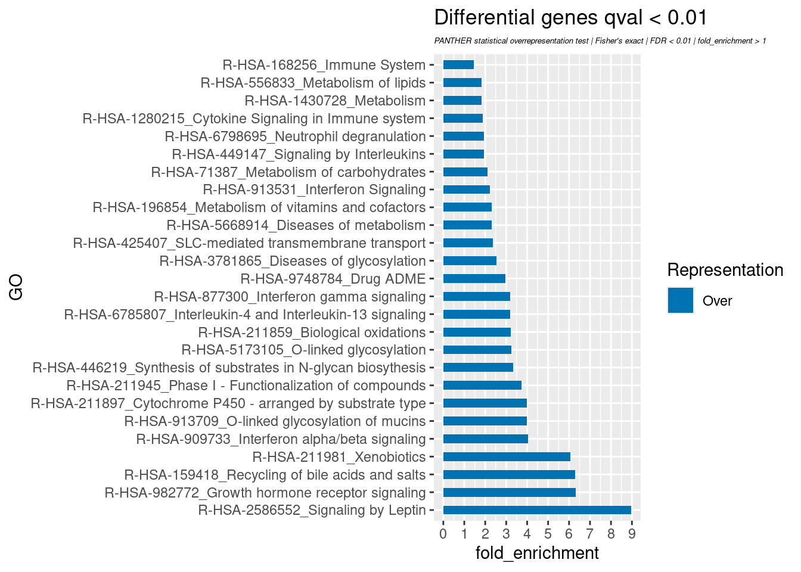
Does IL26 have a(ny) subtle effect masked by this analysis? Pairwise test to explore.
Test for differentially-expressed genes - pairwise (IL26 vs control)
metadata.il26 <- subset(metadata, stim == "IL26" | stim == "ctl")so.il26 <- sleuth_prep(metadata.il26, target_mapping = ttg, aggregation_column = 'ens_gene',
extra_bootstrap_summary = TRUE,
read_bootstrap_tpm = TRUE) # turn this flag on to plot TPM bootstaps later on# save sleuth object to reload without recomputing bootstraps
saveRDS(so.il26, file = "./01_diffexp_sleuth-so.il26.rds")so.il26 <- readRDS("./01_diffexp_sleuth-so.il26.rds")# covariates
plot_pca(so.il26, units = "tpm", color_by = "donor")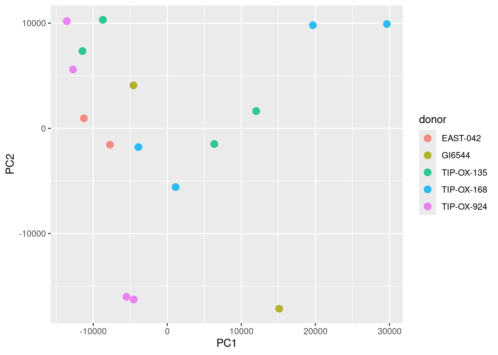
plot_pca(so.il26, units = "tpm", color_by = "batch")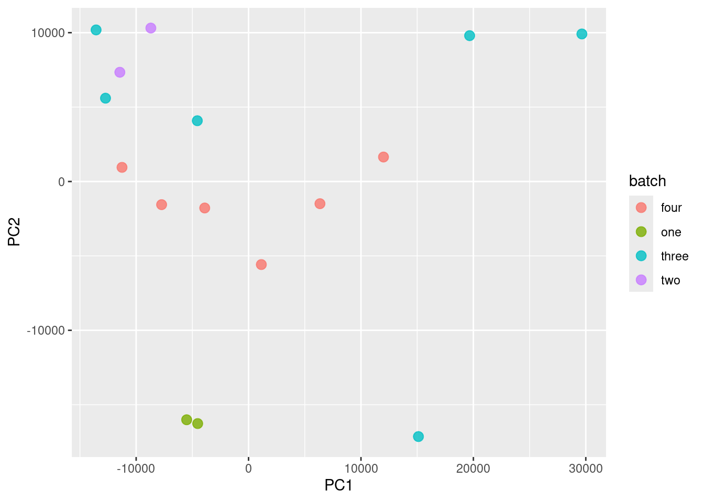
plot_pca(so.il26, units = "tpm", color_by = "medium")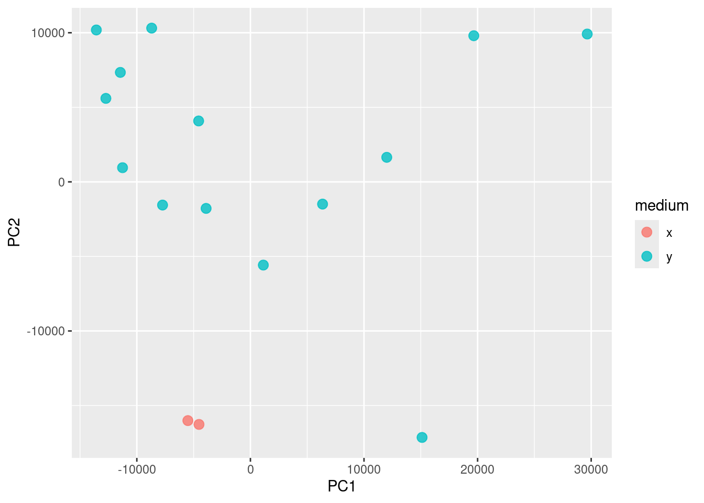
# conditions
plot_pca(so.il26, units = "tpm", color_by = "time")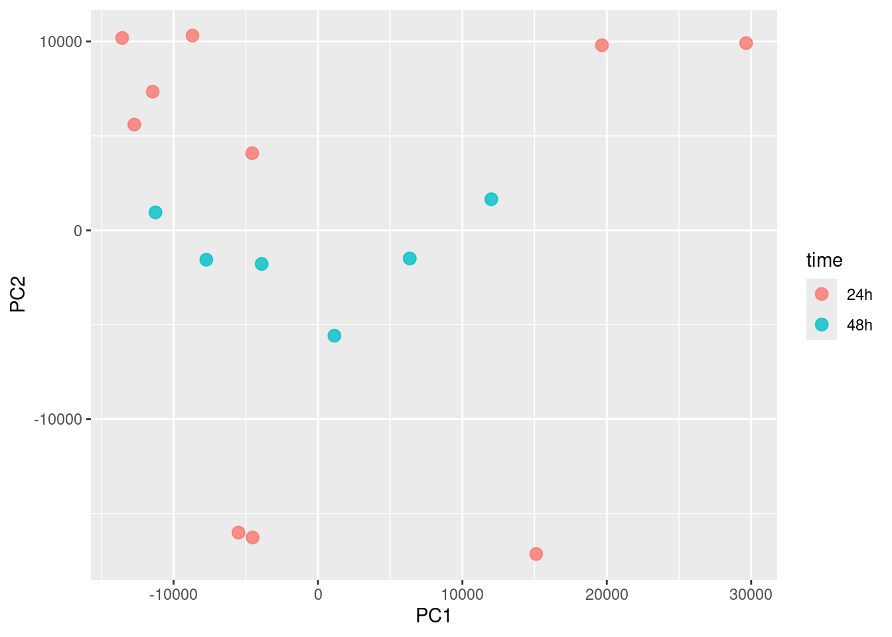
plot_pca(so.il26, units = "tpm", color_by = "stim")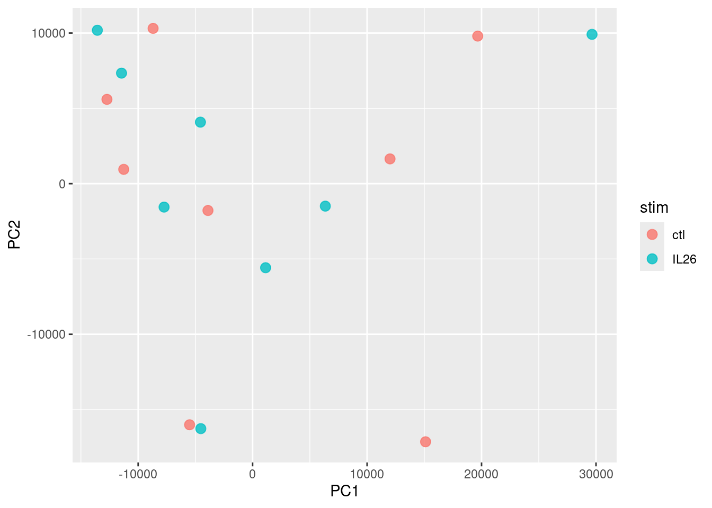
Fit a reduced model, which includes the parameters corresponding to experimental covariates we are controlling for i.e. batch (which will account for medium, time) and donor. At this point time is accounted for i.e. to control for genes that may be differentially expressed at different timepoints independently of stim.
so.il26 <- sleuth_fit(so.il26, ~batch + donor, 'reduced')fitting measurement error modelsshrinkage estimation3 NA values were found during variance shrinkage estimation due to mean observation values outside of the range used for the LOESS fit.
The LOESS fit will be repeated using exact computation of the fitted surface to extrapolate the missing values.
These are the target ids with NA values: ENST00000512751.5, ENST00000356495.4, ENST00000361624.2computing variance of betasFit the full model which includes all parameters including stim.
so.il26 <- sleuth_fit(so.il26, ~batch + donor + stim, 'full')fitting measurement error modelsshrinkage estimation3 NA values were found during variance shrinkage estimation due to mean observation values outside of the range used for the LOESS fit.
The LOESS fit will be repeated using exact computation of the fitted surface to extrapolate the missing values.
These are the target ids with NA values: ENST00000512751.5, ENST00000356495.4, ENST00000361624.2computing variance of betasThen compare the full model to the reduced model with the likelihood ratio test. Using the likelihood ratio test, sleuth identifies genes whose abundances are significantly better explained when IL26 treatment (stim) is taken into account, while accounting for baseline differences that may be explained by batch or donor.
so.il26 <- sleuth_lrt(so.il26, 'reduced', 'full')Obtain gene-level differential expression results. Sleuth uses the p-values from comparing transcripts to make a gene-level determination and perform gene differential expression.
sleuth_table_gene.il26 <- sleuth_results(so.il26, 'reduced:full', 'lrt', show_all = FALSE)
sleuth_table_gene.il26 <- dplyr::filter(sleuth_table_gene.il26, qval <= 0.1) # zero genes <= 0.05
head(sleuth_table_gene.il26, 20) target_id ext_gene num_aggregated_transcripts sum_mean_obs_counts
1 ENSG00000187908 DMBT1 1 7.869715
2 ENSG00000183049 CAMK1D 1 1.479010
3 ENSG00000187193 MT1X 2 7.918024
pval qval
1 7.104320e-07 0.008928709
2 5.970526e-06 0.037518783
3 1.800217e-05 0.075417094# save result table
write.csv(sleuth_table_gene.il26, file = "./outputs/01_diffexp_sleuth-genes-qval01-IL26.csv", quote = FALSE, row.names = FALSE)Obtain transcript-level differential expression results.
sleuth_table_tx.il26 <- sleuth_results(so.il26, 'reduced:full', 'lrt', show_all = FALSE, pval_aggregate = FALSE)
sleuth_table_tx.il26 <- dplyr::filter(sleuth_table_tx.il26, qval <= 0.1)
head(sleuth_table_tx.il26, 20) target_id ens_gene ext_gene pval qval
1 ENST00000330163.8 <NA> <NA> 1.079840e-09 3.545222e-05
2 ENST00000368956.6 <NA> <NA> 1.079840e-09 3.545222e-05
3 ENST00000619379.1 ENSG00000187908 DMBT1 7.104320e-07 9.329677e-03
4 ENST00000338354.7 <NA> <NA> 7.104320e-07 9.329677e-03
5 ENST00000368909.7 <NA> <NA> 7.104320e-07 9.329677e-03
6 ENST00000344338.7 <NA> <NA> 1.523934e-06 1.429494e-02
7 ENST00000368955.7 <NA> <NA> 1.523934e-06 1.429494e-02
8 ENST00000464744.5 <NA> <NA> 2.723463e-06 2.235350e-02
9 ENST00000394634.6 <NA> <NA> 3.303491e-06 2.410154e-02
10 ENST00000311713.11 <NA> <NA> 4.425090e-06 2.641457e-02
11 ENST00000449081.6 <NA> <NA> 4.196372e-06 2.641457e-02
12 ENST00000394485.4 ENSG00000187193 MT1X 5.488730e-06 3.003342e-02
13 ENST00000615792.1 ENSG00000183049 CAMK1D 5.970526e-06 3.015667e-02
14 ENST00000320443.12 <NA> <NA> 8.036347e-06 3.769161e-02
15 ENST00000378254.5 <NA> <NA> 9.730455e-06 3.993257e-02
16 ENST00000541428.4 <NA> <NA> 9.286272e-06 3.993257e-02
17 ENST00000221992.10 <NA> <NA> 1.385628e-05 5.054617e-02
18 ENST00000421699.6 <NA> <NA> 1.368563e-05 5.054617e-02
19 ENST00000381090.7 <NA> <NA> 1.779247e-05 6.103538e-02
20 ENST00000465241.5 <NA> <NA> 1.859078e-05 6.103538e-02
test_stat rss degrees_free mean_obs var_obs tech_var sigma_sq
1 37.17510 5.0550148 1 7.840726 0.8370407 0.0035913776 0.62828547
2 37.17510 5.0550148 1 7.840726 0.8370407 0.0035913776 0.62828547
3 24.58662 6.5212262 1 7.869715 1.2514294 0.0022301439 0.81292314
4 24.58662 6.5212262 1 7.869715 1.2514294 0.0022301439 0.81292314
5 24.58662 6.5212262 1 7.869715 1.2514294 0.0022301439 0.81292314
6 23.11755 6.7367582 1 8.258614 0.8392234 0.0017360384 0.84035873
7 23.11755 6.7367582 1 8.258614 0.8392234 0.0017360384 0.84035873
8 22.00214 56.1240536 1 1.888006 4.4992793 1.2878328125 5.72767388
9 21.63169 15.7341039 1 4.887342 3.2478790 0.2655098686 1.70125312
10 21.07129 37.1823221 1 2.011316 3.7251295 0.6462984210 4.00149184
11 21.17299 2.2002072 1 6.233650 0.3377679 0.0594875139 0.21553839
12 20.65870 0.8292244 1 6.040390 0.9146518 0.0035452507 0.10010780
13 20.49763 55.3188111 1 1.479010 4.0430102 1.2376164895 5.67723490
14 19.92920 55.2587300 1 2.319572 4.6075060 2.2527884834 4.65455276
15 19.56362 41.7547558 1 1.587982 3.5389113 1.1032541816 4.11609029
16 19.65289 0.1989220 1 7.996155 0.1073590 0.0011051674 0.02376009
17 18.88881 0.2998424 1 9.545262 1.5174246 0.0004137942 0.03706650
18 18.91245 1.3934287 1 7.124160 0.2194301 0.0224273080 0.15175128
19 18.41210 51.8498522 1 1.564771 4.6270047 1.4257861653 5.05544536
20 18.32847 33.4638934 1 1.373187 3.3045897 0.6376328102 3.54535387
smooth_sigma_sq final_sigma_sq
1 0.010804107 0.62828547
2 0.010804107 0.62828547
3 0.010711065 0.81292314
4 0.010711065 0.81292314
5 0.010711065 0.81292314
6 0.009709935 0.84035873
7 0.009709935 0.84035873
8 0.682055213 5.72767388
9 0.049921531 1.70125312
10 0.614152529 4.00149184
11 0.021972826 0.21553839
12 0.024531391 0.10010780
13 0.956917444 5.67723490
14 0.470594924 4.65455276
15 0.875551762 4.11609029
16 0.010336469 0.02376009
17 0.009078699 0.03706650
18 0.014115561 0.15175128
19 0.892351381 5.05544536
20 1.042266636 3.54535387# save result table
write.csv(sleuth_table_tx.il26, file = "./outputs/01_diffexp_sleuth-transcripts-qval01-IL26.csv", quote = FALSE, row.names = FALSE)Three genes differentially-expressed (qval < 0.1) in response to IL26 stimulation. Visualise how each is expressed across the different conditions and covariates by plotting bootstraps per transcript.
- CAMK1D slightly upregulated (qval = 0.038) in IL26 samples…
plot_bootstrap(so.il26, "ENST00000615792.1", units = "tpm", color_by = "stim") # CAMK1D transcript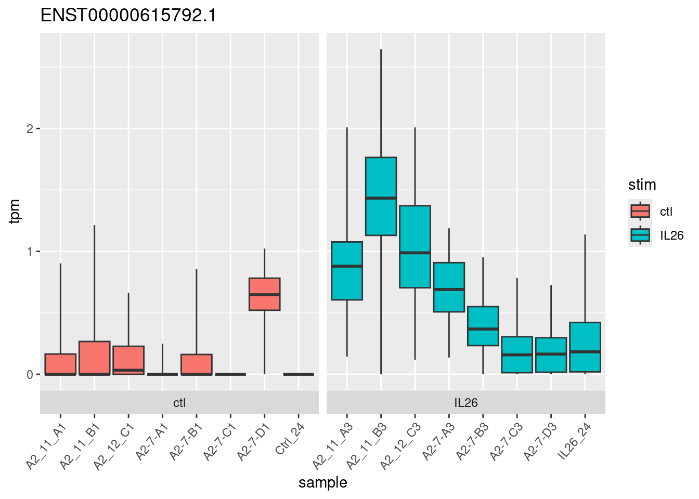
…This observation is consistent across donors…
plot_bootstrap(so.il26, "ENST00000615792.1", units = "tpm", color_by = "donor")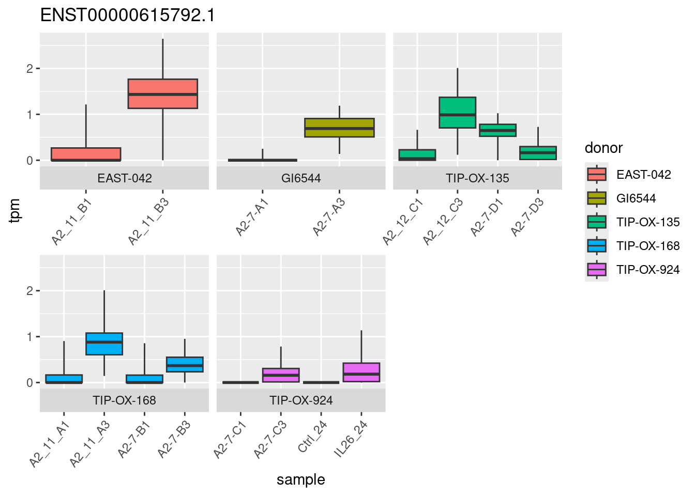
…and batches, except for batch 2 which comes from donor TIP-OX-135…
plot_bootstrap(so.il26, "ENST00000615792.1", units = "tpm", color_by = "batch")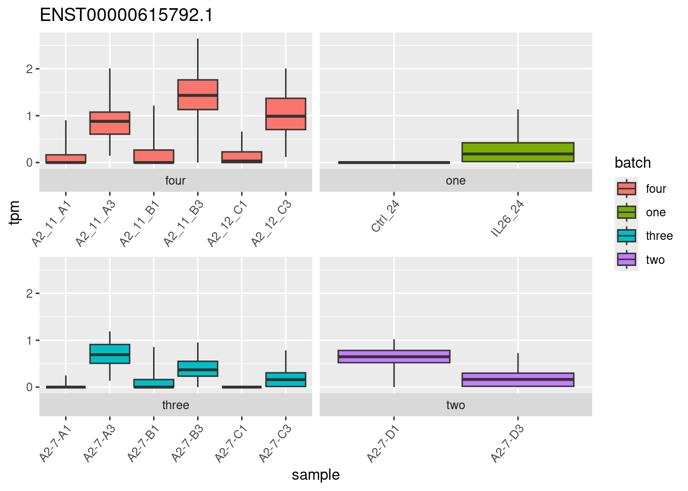
…and appears slightly elevated in 48h samples.
plot_bootstrap(so.il26, "ENST00000615792.1", units = "tpm", color_by = "time")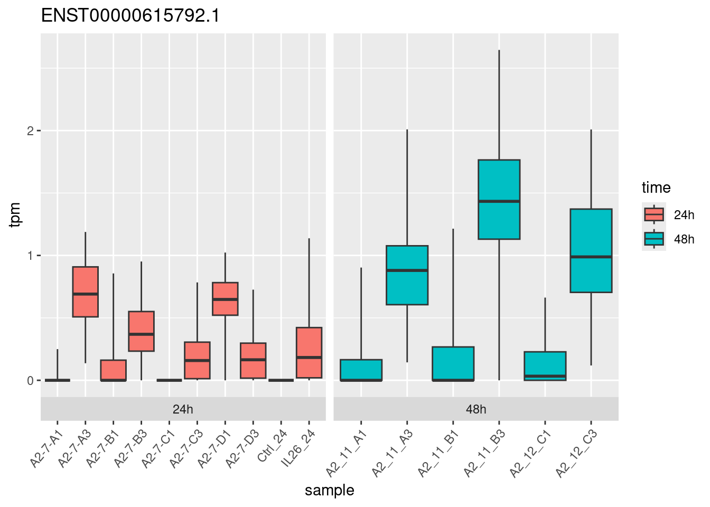
- DMBT1 upregulated (qval = 0.008) in some IL26 samples…
plot_bootstrap(so.il26, "ENST00000619379.1", units = "tpm", color_by = "stim") # DMBT1 transcript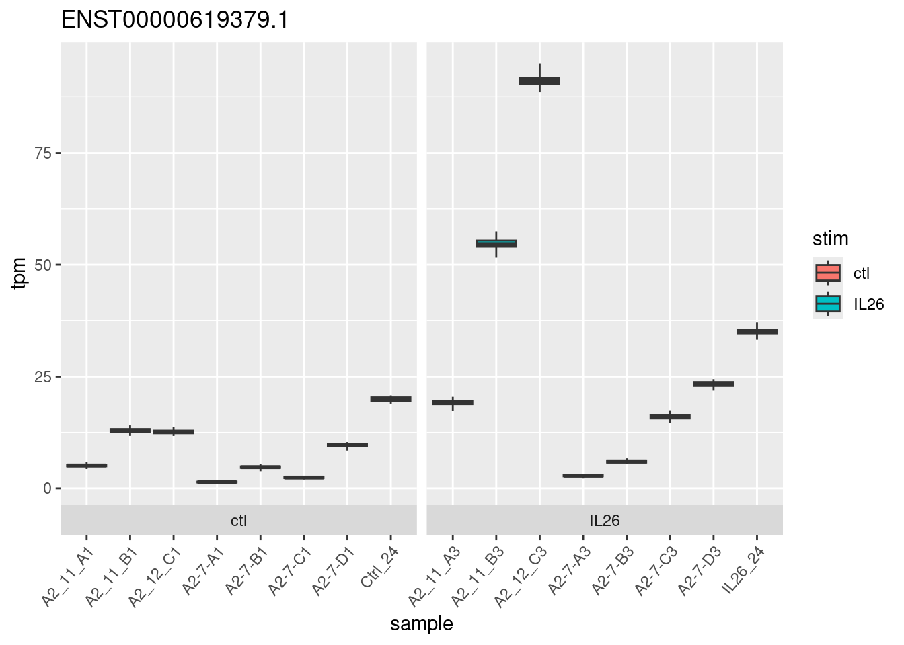
…observed in two different donors…
plot_bootstrap(so.il26, "ENST00000619379.1", units = "tpm", color_by = "donor")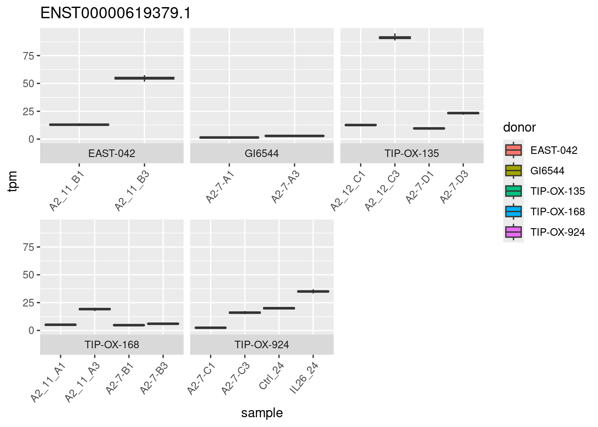
…from batch four i.e. 48h timepoint.
plot_bootstrap(so.il26, "ENST00000619379.1", units = "tpm", color_by = "time")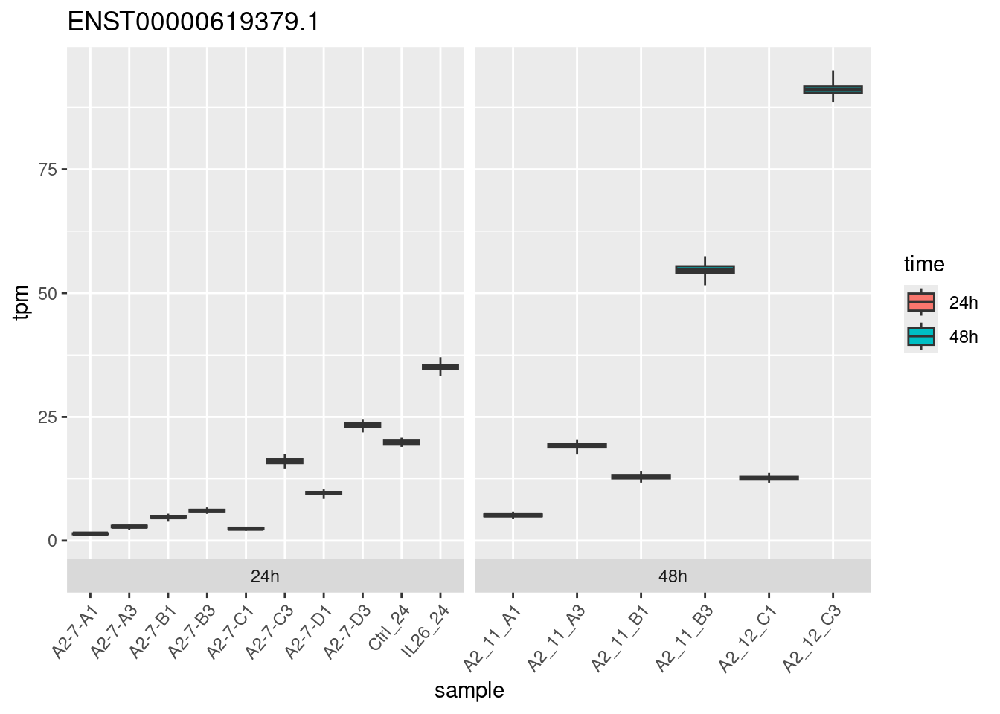
plot_bootstrap(so.il26, "ENST00000619379.1", units = "tpm", color_by = "batch")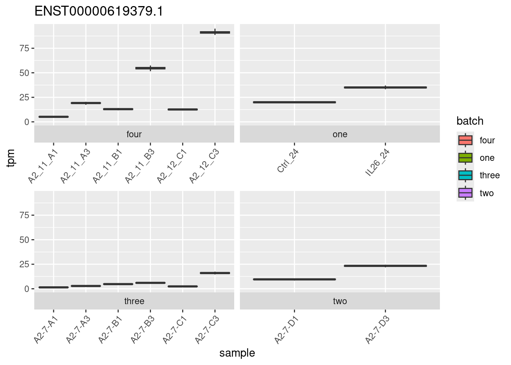
- Put into context of the earlier multi-condition analysis.
# By default, dittoHeatmap prioritises "logcounts" over "counts"
dittoHeatmap(bulkSCE, tx.diff,
annot.by = c("stim", "time", "medium", "donor"),
order.by = ("stim"), cluster_cols = FALSE,
show_rownames = FALSE,
highlight.features = c("ENST00000615792.1_CAMK1D", "ENST00000619379.1_DMBT1", "ENST00000394485.4_MT1X"),
main = "Differential genes (qval<0.01) | IL22/22+26/26 stim vs control")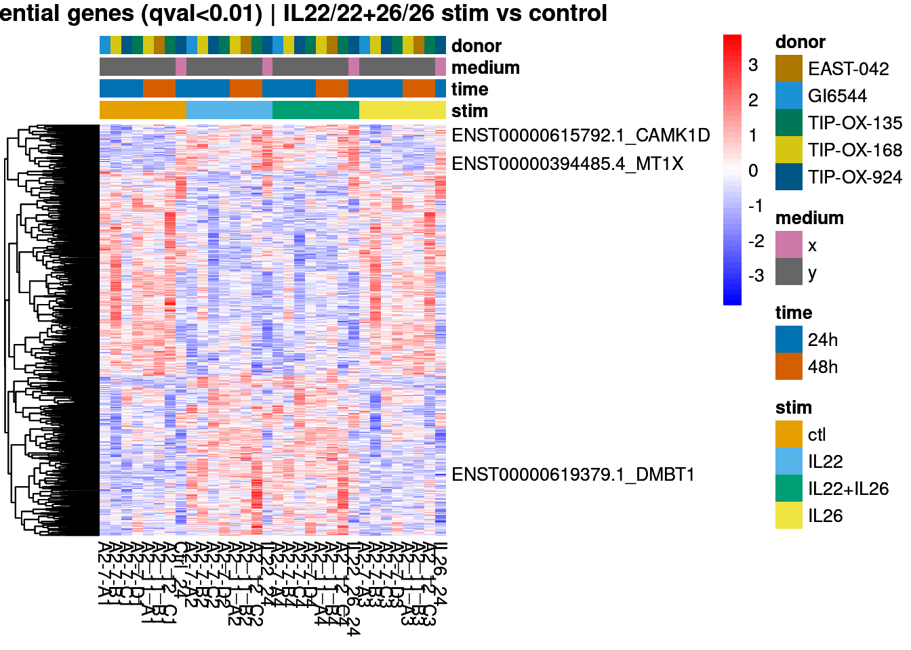
H Chen - IL26 might not do too much on its own but could affect IL22-mediated effects.
Test for differentially-expressed genes - pairwise (IL22+IL26 vs IL22)
metadata.il22.il26 <- subset(metadata, stim == "IL22" | stim == "IL22+IL26")so.il22.il26 <- sleuth_prep(metadata.il22.il26,
target_mapping = ttg,
aggregation_column = 'ens_gene',
extra_bootstrap_summary = TRUE,
read_bootstrap_tpm = TRUE) # turn this flag on to plot TPM bootstraps later on# save sleuth object to reload without recomputing bootstraps
saveRDS(so.il22.il26, file = "./01_diffexp_sleuth-so.il22.il26.rds")so.il22.il26 <- readRDS("./01_diffexp_sleuth-so.il22.il26.rds")# covariates
plot_pca(so.il22.il26, units = "tpm", color_by = "donor")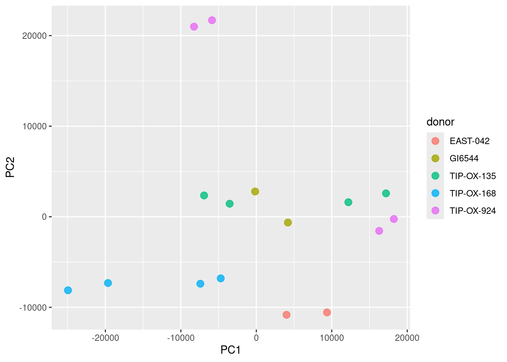
plot_pca(so.il22.il26, units = "tpm", color_by = "batch")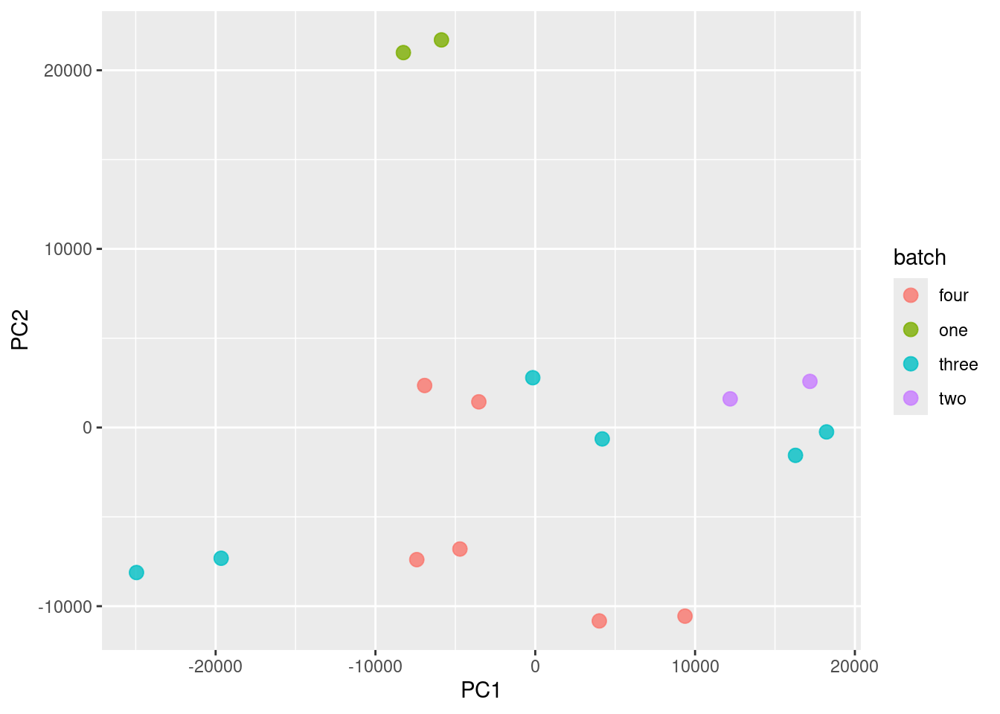
plot_pca(so.il22.il26, units = "tpm", color_by = "medium")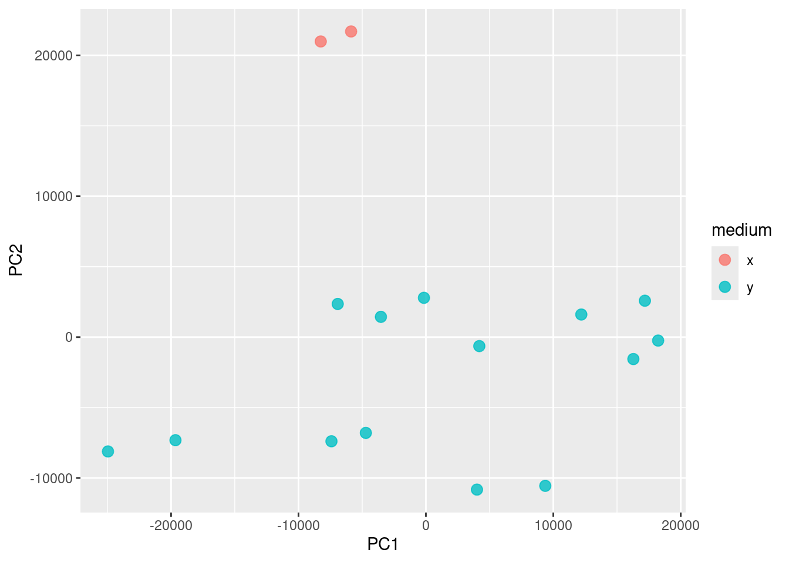
# conditions
plot_pca(so.il22.il26, units = "tpm", color_by = "time")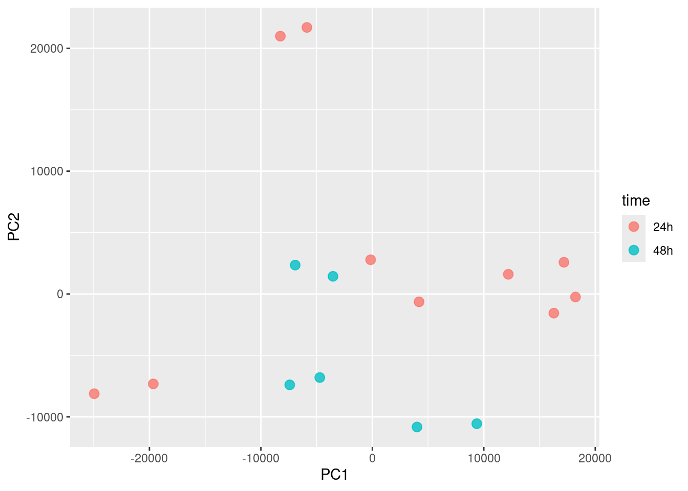
plot_pca(so.il22.il26, units = "tpm", color_by = "stim")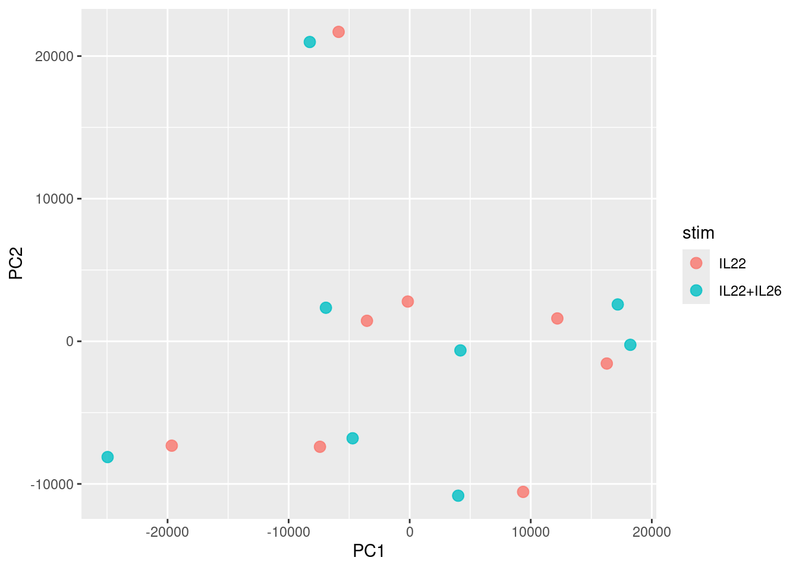
Fit a reduced model, which includes the parameters corresponding to experimental covariates we are controlling for i.e. batch (which will account for medium, time) and donor. At this point time is accounted for i.e. to control for genes that may be differentially expressed at different timepoints independently of stim.
so.il22.il26 <- sleuth_fit(so.il22.il26, ~batch + donor, 'reduced')fitting measurement error modelsshrinkage estimation2 NA values were found during variance shrinkage estimation due to mean observation values outside of the range used for the LOESS fit.
The LOESS fit will be repeated using exact computation of the fitted surface to extrapolate the missing values.
These are the target ids with NA values: ENST00000219022.2, ENST00000361624.2computing variance of betasFit the full model which includes all parameters including stim.
so.il22.il26 <- sleuth_fit(so.il22.il26, ~batch + donor + stim, 'full')fitting measurement error modelsshrinkage estimation2 NA values were found during variance shrinkage estimation due to mean observation values outside of the range used for the LOESS fit.
The LOESS fit will be repeated using exact computation of the fitted surface to extrapolate the missing values.
These are the target ids with NA values: ENST00000219022.2, ENST00000361624.2computing variance of betasThen compare the full model to the reduced model with the likelihood ratio test. Using the likelihood ratio test, sleuth identifies genes whose abundances are significantly better explained when IL26 treatment (stim) is taken into account, while accounting for baseline differences that may be explained by batch or donor.
so.il22.il26 <- sleuth_lrt(so.il22.il26, 'reduced', 'full')Obtain gene-level differential expression results. Sleuth uses the p-values from comparing transcripts to make a gene-level determination and perform gene differential expression.
sleuth_table_gene.il22.il26 <- sleuth_results(so.il22.il26, 'reduced:full', 'lrt', show_all = FALSE)
sleuth_table_gene.il22.il26 <- dplyr::filter(sleuth_table_gene.il22.il26, qval <= 0.05)
head(sleuth_table_gene.il22.il26, 20) target_id ext_gene num_aggregated_transcripts sum_mean_obs_counts
1 ENSG00000124570 SERPINB6 1 5.589838
2 ENSG00000167065 DUSP18 4 18.344722
3 ENSG00000102144 PGK1 4 28.067188
4 ENSG00000170537 TMC7 1 6.289153
5 ENSG00000181577 C6orf223 3 15.464653
6 ENSG00000137673 MMP7 2 10.976688
7 ENSG00000137440 FGFBP1 1 7.740898
8 ENSG00000176907 C8orf4 1 6.621298
9 ENSG00000120800 UTP20 1 7.380428
10 ENSG00000232388 LINC00493 2 11.436692
11 ENSG00000130066 SAT1 3 18.734066
12 ENSG00000013588 GPRC5A 4 28.980578
13 ENSG00000034510 TMSB10 1 10.513427
14 ENSG00000160180 TFF3 2 16.119184
pval qval
1 1.506742e-05 0.02880684
2 1.336450e-05 0.02880684
3 8.518345e-06 0.02880684
4 1.859256e-05 0.02880684
5 1.723114e-05 0.02880684
6 1.540802e-05 0.02880684
7 1.033695e-05 0.02880684
8 3.735930e-06 0.02880684
9 2.544494e-05 0.03504334
10 3.720178e-05 0.04019571
11 3.953919e-05 0.04019571
12 3.736394e-05 0.04019571
13 4.540055e-05 0.04019571
14 4.474766e-05 0.04019571# save result table
write.csv(sleuth_table_gene.il22.il26, file = "./outputs/01_diffexp_sleuth-genes-qval005-IL22vsIL22+26.csv", quote = FALSE, row.names = FALSE)Obtain transcript-level differential expression results.
sleuth_table_tx.il22.il26 <- sleuth_results(so.il22.il26, 'reduced:full', 'lrt', show_all = FALSE, pval_aggregate = FALSE)
sleuth_table_tx.il22.il26 <- dplyr::filter(sleuth_table_tx.il22.il26, qval <= 0.05)
head(sleuth_table_tx.il22.il26, 20) target_id ens_gene ext_gene pval qval
1 ENST00000380539.5 <NA> <NA> 2.172516e-07 0.01404727
2 ENST00000312419.7 <NA> <NA> 1.079265e-06 0.01853754
3 ENST00000326427.10 <NA> <NA> 8.161081e-07 0.01853754
4 ENST00000358789.7 <NA> <NA> 1.471270e-06 0.01853754
5 ENST00000493975.5 <NA> <NA> 2.293576e-06 0.01853754
6 ENST00000544604.6 <NA> <NA> 1.850652e-06 0.01853754
7 ENST00000632792.1 <NA> <NA> 1.377323e-06 0.01853754
8 ENST00000635083.1 <NA> <NA> 2.185486e-06 0.01853754
9 ENST00000622186.4 <NA> <NA> 3.134801e-06 0.02252145
10 ENST00000315792.4 ENSG00000176907 C8orf4 3.735930e-06 0.02415615
11 ENST00000453385.1 ENSG00000122140 MRPS2 6.979534e-06 0.03091028
12 ENST00000292401.8 <NA> <NA> 6.521691e-06 0.03091028
13 ENST00000297875.6 <NA> <NA> 6.356775e-06 0.03091028
14 ENST00000377625.6 <NA> <NA> 7.648810e-06 0.03091028
15 ENST00000379442.7 <NA> <NA> 7.284927e-06 0.03091028
16 ENST00000443024.6 <NA> <NA> 7.151986e-06 0.03091028
17 ENST00000508167.5 <NA> <NA> 8.598400e-06 0.03270376
18 ENST00000372684.7 <NA> <NA> 9.217946e-06 0.03311240
19 ENST00000382333.1 ENSG00000137440 FGFBP1 1.033695e-05 0.03409581
20 ENST00000450894.7 <NA> <NA> 1.054635e-05 0.03409581
test_stat rss degrees_free mean_obs var_obs tech_var
1 26.87319 1.3510293 1 7.499785 0.67167626 0.0139089796
2 23.78129 0.2458086 1 7.390601 0.25722352 0.0009921625
3 24.31945 0.1668187 1 9.237607 0.24431953 0.0002921633
4 23.18518 0.1747008 1 8.997427 0.39436003 0.0001517003
5 22.33196 59.9301376 1 1.906108 4.49586474 1.5074088233
6 22.74417 0.2504223 1 7.287973 0.10099622 0.0008254028
7 23.31208 49.7962494 1 2.415906 5.17978580 1.2543755922
8 22.42467 28.0234605 1 1.448439 2.18137895 0.2742221027
9 21.73223 0.1674669 1 8.290881 0.07425807 0.0005082416
10 21.39578 0.3951005 1 6.621298 0.49693930 0.0016025725
11 20.19884 54.4286298 1 1.341978 4.92460317 1.1432127366
12 20.32864 0.1972215 1 7.207902 0.29937263 0.0008395418
13 20.37765 0.3589276 1 6.507534 0.60745362 0.0023775102
14 20.02370 0.1543288 1 7.861537 0.10268112 0.0004827137
15 20.11692 65.2910980 1 3.381789 6.63321758 1.4459131566
16 20.15215 73.9782112 1 4.062362 7.02038671 2.1752798754
17 19.79997 0.2152819 1 8.268921 0.10114301 0.0018595511
18 19.66700 0.1943582 1 7.173530 0.63132055 0.0009494448
19 19.44812 0.3137476 1 7.740898 0.34197044 0.0005344616
20 19.40982 0.2808348 1 8.964690 0.41974975 0.0021005286
sigma_sq smooth_sigma_sq final_sigma_sq
1 0.15496968 0.007419036 0.15496968
2 0.02973391 0.007779416 0.02973391
3 0.02056017 0.005559263 0.02056017
4 0.02168590 0.005466293 0.02168590
5 5.98385838 0.675906363 5.98385838
6 0.03047738 0.008155760 0.03047738
7 4.97015558 0.436684492 4.97015558
8 3.22871046 0.979933557 3.22871046
9 0.02042512 0.005797009 0.02042512
10 0.04778499 0.011671534 0.04778499
11 5.66036598 1.065565643 5.66036598
12 0.02381314 0.008476591 0.02381314
13 0.04248844 0.012495401 0.04248844
14 0.01880838 0.006482768 0.01880838
15 6.71547409 0.174714511 6.71547409
16 7.07199652 0.086757951 7.07199652
17 0.02505069 0.005822397 0.02505069
18 0.02334533 0.008622043 0.02334533
19 0.03868398 0.006754404 0.03868398
20 0.03300382 0.005461667 0.03300382# save result table
write.csv(sleuth_table_tx.il22.il26, file = "./outputs/01_diffexp_sleuth-transcripts-qval005-IL22vsIL22+26.csv", quote = FALSE, row.names = FALSE)Visualise these as a dittoSeq heatmap.
tx.diff.2 <- na.omit(sleuth_table_tx.il22.il26)
tx.diff.2 <- paste(tx.diff.2$target_id, tx.diff.2$ext_gene, sep = "_")# By default, dittoHeatmap prioritises "logcounts" over "counts"
dittoHeatmap(bulkSCE, tx.diff.2,
annot.by = c("stim", "time", "medium", "donor"),
order.by = ("stim"), cluster_cols = FALSE,
main = "Differential genes (qval<0.05) | IL22+26 vs IL22") 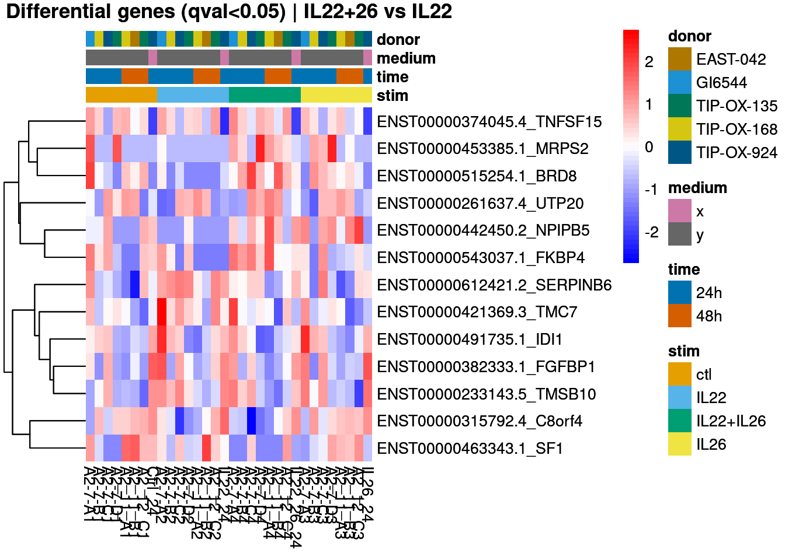
Notes
- Technical replicates for samples
A2-7*,A2-11*andA2-12*are in progress. - Rebuild kallisto index with latest Ensembl release and re-run analysis.
- All samples have also been mapped and counted using STAR with
--quantMode GeneCountsfor differential expression with DESeq2 - are the main observations replicated?
Packages and session info
pkgs <- cite_packages(output = "table", out.dir = ".")
knitr::kable(pkgs)| Package | Version | Citation |
|---|---|---|
| base | 4.5.1 | @base |
| biomaRt | 2.64.0 | @biomaRt…. |
| dittoSeq | 1.20.1 | @dittoSeq |
| knitr | 1.50 | @knitr20…. |
| PCAtools | 2.20.0 | @PCAtools |
| rbioapi | 0.8.3 | @rbioapi |
| rmarkdown | 2.30 | @rmarkdo…. |
| sleuth | 0.30.2 | @sleuth |
| SummarizedExperiment | 1.38.1 | @Summari…. |
| tidyverse | 2.0.0 | @tidyverse |
sessionInfo()R version 4.5.1 (2025-06-13)
Platform: x86_64-pc-linux-gnu
Running under: Ubuntu 22.04.5 LTS
Matrix products: default
BLAS: /usr/lib/x86_64-linux-gnu/blas/libblas.so.3.10.0
LAPACK: /usr/lib/x86_64-linux-gnu/lapack/liblapack.so.3.10.0 LAPACK version 3.10.0
locale:
[1] LC_CTYPE=en_GB.UTF-8 LC_NUMERIC=C
[3] LC_TIME=en_GB.UTF-8 LC_COLLATE=en_GB.UTF-8
[5] LC_MONETARY=en_GB.UTF-8 LC_MESSAGES=en_GB.UTF-8
[7] LC_PAPER=en_GB.UTF-8 LC_NAME=C
[9] LC_ADDRESS=C LC_TELEPHONE=C
[11] LC_MEASUREMENT=en_GB.UTF-8 LC_IDENTIFICATION=C
time zone: Europe/London
tzcode source: system (glibc)
attached base packages:
[1] stats4 stats graphics grDevices utils datasets methods
[8] base
other attached packages:
[1] grateful_0.3.0 rbioapi_0.8.3
[3] sleuth_0.30.2 PCAtools_2.20.0
[5] ggrepel_0.9.6 biomaRt_2.64.0
[7] dittoSeq_1.20.1 SummarizedExperiment_1.38.1
[9] Biobase_2.68.0 GenomicRanges_1.60.0
[11] GenomeInfoDb_1.44.3 IRanges_2.42.0
[13] S4Vectors_0.46.0 BiocGenerics_0.54.1
[15] generics_0.1.4 MatrixGenerics_1.20.0
[17] matrixStats_1.5.0 lubridate_1.9.4
[19] forcats_1.0.1 stringr_1.5.2
[21] dplyr_1.1.4 purrr_1.1.0
[23] readr_2.1.5 tidyr_1.3.1
[25] tibble_3.3.0 ggplot2_4.0.0
[27] tidyverse_2.0.0
loaded via a namespace (and not attached):
[1] DBI_1.2.3 gridExtra_2.3
[3] httr2_1.2.1 rlang_1.1.6
[5] magrittr_2.0.4 aggregation_1.0.1
[7] ggridges_0.5.7 compiler_4.5.1
[9] RSQLite_2.4.3 DelayedMatrixStats_1.30.0
[11] reshape2_1.4.4 png_0.1-8
[13] vctrs_0.6.5 pkgconfig_2.0.3
[15] crayon_1.5.3 fastmap_1.2.0
[17] dbplyr_2.5.1 XVector_0.48.0
[19] labeling_0.4.3 rmarkdown_2.30
[21] tzdb_0.5.0 UCSC.utils_1.4.0
[23] bit_4.6.0 xfun_0.54
[25] cachem_1.1.0 beachmat_2.24.0
[27] jsonlite_2.0.0 progress_1.2.3
[29] blob_1.2.4 rhdf5filters_1.20.0
[31] DelayedArray_0.34.1 Rhdf5lib_1.30.0
[33] BiocParallel_1.42.2 irlba_2.3.5.1
[35] parallel_4.5.1 prettyunits_1.2.0
[37] R6_2.6.1 stringi_1.8.7
[39] RColorBrewer_1.1-3 Rcpp_1.1.0
[41] knitr_1.50 Matrix_1.7-4
[43] timechange_0.3.0 tidyselect_1.2.1
[45] rstudioapi_0.17.1 abind_1.4-8
[47] yaml_2.3.10 codetools_0.2-19
[49] curl_7.0.0 plyr_1.8.9
[51] lattice_0.22-5 withr_3.0.2
[53] KEGGREST_1.48.1 S7_0.2.0
[55] evaluate_1.0.5 BiocFileCache_2.16.2
[57] xml2_1.4.1 Biostrings_2.76.0
[59] pillar_1.11.1 filelock_1.0.3
[61] renv_1.1.5 hms_1.1.4
[63] sparseMatrixStats_1.20.0 scales_1.4.0
[65] glue_1.8.0 lazyeval_0.2.2
[67] pheatmap_1.0.13 tools_4.5.1
[69] data.table_1.17.8 ScaledMatrix_1.16.0
[71] rhdf5_2.52.1 cowplot_1.2.0
[73] grid_4.5.1 AnnotationDbi_1.70.0
[75] colorspace_2.1-2 SingleCellExperiment_1.30.1
[77] GenomeInfoDbData_1.2.14 BiocSingular_1.24.0
[79] cli_3.6.5 rsvd_1.0.5
[81] rappdirs_0.3.3 S4Arrays_1.8.1
[83] gtable_0.3.6 digest_0.6.37
[85] dqrng_0.4.1 SparseArray_1.8.1
[87] farver_2.1.2 memoise_2.0.1
[89] htmltools_0.5.8.1 lifecycle_1.0.4
[91] httr_1.4.7 bit64_4.6.0-1